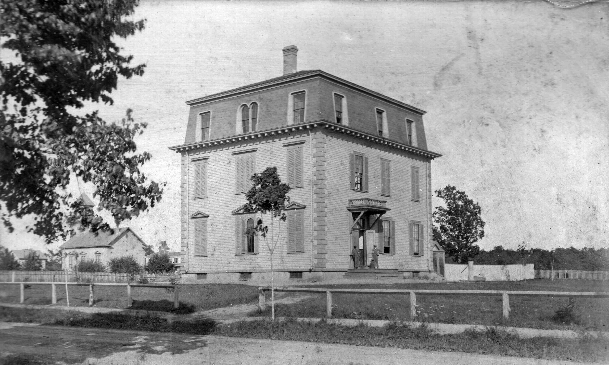

Unfortunately, we know very little about the Bowling Green. It was one of two bowling alleys in Needham, along with the Needham Bowlaway. The Bowling Green was in operation from about the 1930s until the 1970s. Bowling was a very popular pastime during those years, and the Bowling Green was a popular spot both for family entertainment and more formal league bowling. One of the Green's champion bowlers was also often featured on Don Gillis' TV show 'Candlepin Bowling' (WCVB).
The Bowling Green was the more 'respectable' of Needham's two bowling alleys. The Bowlaway was older (opened in 1917) and in a basement. It had pool tables in addition to the lanes, so it was more of a men's hangout. Since the Bowling Green was brighter and had no pool tables, it was considered more comfortable for children and ladies.
As the popularity of bowling declined, Needham could no longer support two bowling alleys. The Bowlaway hung on by installing laser lights and specializing in children's parties, replacing the pool tables with birthday-party tables. The Bowling Green closed sometime in the 1970s, and the site became an auto-parts store. The YMCA moved into the building in the 1990s and built its Active Family Center.
TripAdvisor was founded in February 2000 in a small office above Kosta's Pizza on Chestnut Street. The original plan was to offer a central location for travelers to find reviews from professional sources and reviewers. However, a sidebar feature allowing travelers to add their own reviews took off, quickly outpacing the professional reviews, and rapidly transformed the site into a source for user-generated information. By 2007, 10 million reviews had been posted, reaching 200 million by the end of 2014.
Site content has grown to include restaurants, rentals, cruises, and other attractions. Comparison and booking facilities allow users to make travel arrangements on-site. The company now includes more than 25 travel brands and operates websites in more than 30 countries. In 15 years, TripAdvisor has become the world’s largest travel site, with approximately 300 million unique visitors per month.
TripAdvisor is building a new world headquarters in Needham’s new business/technology district, the N2 Corridor near Route 128. The new building, scheduled to be completed in spring of 2015, will contain nearly 300,000 square feet of office space and 1500 employees, with the possibility of enlarging both the building and the workforce by about 40% in future years.
The company is now returning to Needham. Rapidly outgrowing the Chestnut Street location, TripAdvisor moved to larger offices on Needham Street in Newton. It is now building its large world headquarters in Needham, near Rt. 128 in the N2 Corridor business district.
First location – 1004 Great Plain Avenue – this is Roche Bros first store in Needham (and second store overall), in 1963 (note the banner in the window – "We're 11 years Old")
In 1952 two young men named Pat and Buddy (Daniel) Roche opened a tiny meat market in Roslindale, financed by their parents, who were willing to mortgage their home to help their boys fulfill a dream of owning their own store. A produce department was soon added. In a few years the dress shop next door closed, and within a week Pat and Buddy were expanding their store.
The enlarged store had a grand opening on June 10, 1957. Buddy was so nervous about the new store that just six days later – even though it was his wedding day – he showed up that morning ready to go to work.
By 1959 business was booming, and the Roche brothers began looking for a site for another store. They heard that Crossman's, a long time grocery store at the corner of Chestnut Street and Great Plain Avenue in Needham, was going out of business. The building was much larger than the one in Roslindale, had a cellar and a second floor, and much lower rent. They managed to find finances to open the store, but still didn't have access to the building. The owner agreed to meet with them at the Roslindale store. When he arrived the store was extremely busy, and he was quickly convinced he wanted the brothers as tenants. The Needham store opened just a few weeks before Thanksgiving in 1959.
The Roche family cutting the ribbon at the new Chestnut Street store, 1965. Pat is at the far left, and Buddy is at the far right.
Business was slow at first, but picked up as the store became better known. The women of the Congregational Church became regular customers because Buddy not only gave them good prices for the food served at their meetings, but went to the church to slice the meat for them. Word quickly spread that Roche Bros. not only sold good food, but gave excellent service as well. In 1960, stores in Needham typically closed down at 6:00 PM, with no chance of buying food or other goods. Buddy kept the store open until 9:00, and soon the store was kept busy every night except Sundays, when the old Blue Laws kept all businesses shuttered.
Snack bar greets visitors to the new Chestnut Street store, 1965
Pat ran the Roslindale market, and Buddy ran the new store in Needham. As time went on and the stores were flourishing they wanted to expand again. As Buddy drove down Chestnut Street on his way to work he passed an empty lot in front of the railroad tracks. One day a friend told him it belonged to Bill Linse of Miller and Linse, Builders. He went to see Bill Linse, who was interested, but it took more than a year before they signed an agreement of sale. Once again Buddy and Pat were faced with the problem of financing a new store. One day a customer named George Young from Dover entered the store to pick up an order his wife had called in. He told Buddy his wife liked the store, gave Buddy his card and told him to call if he ever needed money. The brothers made an appointment and went into Boston to see him, hoping to borrow around fifty thousand. After Mr. Young heard their plans he told them he would arrange a loan for them for one hundred and seventy five thousand dollars. A Needham architect was hired, and on February 9, 1965 the new Roche Bros. celebrated a grand opening. That was the beginning of what was to become a veritable legend. By that time Buddy had grown to like the town so much that he and his wife, Eileen, moved from Walpole and made Needham their permanent home.
When Needham's other grocery store, the Stop & Shop on Highland Avenue, closed in 1989, the town's only grocery store was Roche Bros. Since the store was not as large as they needed and had no room for expansion, Buddy and Pat bought the Stop & Shop building and opened it as a second store under their new "Sudbury Farms" brand.
Over the years, in all their stores, Buddy and Pat were known for their generosity and helpfulness when needed. They gave to countless organizations with a smile. A young employee who had a fire in her home couldn't believe how the management stepped in to help her get settled again. They hired handicapped people to give them pride in their accomplishments. They are on the list of Best Employers in the state since 2008. Perhaps the most notable of their countless good deeds came during the Hurricane of 1978 when people stranded on Route 128 were brought to St. Bartholomew's Church in Needham by snow mobile. When the Red Cross contacted Buddy for help, his answer was for them to come to the store and just take what they needed. No bill was ever presented. Never ones to publicize what they did, no one will ever know the extent of their giving.
Pat Roche died in May of 2012, Buddy in September of 2013. They are missed by all who were lucky enough to know what exceptional men they were. The Roche Brothers company, now run by the sons of Buddy and Pat, has expanded to 18 stores in eastern Massachusetts and the Cape, and is starting a new venture called Brothers Marketplace.
Current location – 337 Chestnut Street – Roche Bros moved its Needham Store to a larger location on Chestnut Street in 1965, when the Great Plain location was no longer large enough. They added a third store, Sudbury Farms, in 1990.Next: Needham Branch Library
Train crossing 1964: the commuter train crossing Great Plain Avenue in 1964. To the left is the Kingsbury Building, a downtown office block built in 1887, and which burned down in 1980. Along the track is the signal control hut, and the Branch Library is to the right.
Needham's first library association was formed in 1796 as a private subscription library. Each member paid $3.00 to join, with an annual fee of twenty-five cents to be put aside for additional books. Several other subscription libraries were formed in the following century, but it was not until 1888 that Needham Town Meeting voted to create a free public library, that was open to all without fee. The Library was housed in various town facilities, until the current site on Rosemary Street was finally built in 1916.
Library use grew rapidly, and in 1945 a small branch library was opened for two days per week in the Flax Building, at 1054 Great Plain Avenue. The Branch was convenient for those who had business in Needham Center, and was especially popular for its children's programs. In the 1960s, the main library closed for additions and remodeling, making the Branch the only library for a while. In 1985, facing a funding shortfall, the Library closed the Branch and the site returned to business use.
Needham Public Library
The Proprietors of the Needham Library formed in 1796 as an association to provide the townspeople with books. Each member paid $3.00 to join, and an annual fee of twenty-five cents was put aside for additional books. Over the years there were several other private or subscription libraries, open to those who could pay the fees.
In 1888 Town Meeting voted to establish a free public library, open to everyone; it was to be funded by the dog tax. The Free Public Library was first located in a rented room above a store on Great Plain Avenue, moving to a larger space in the Emery Grover Building in 1898, and then to the Town Hall in 1908. Lack of space, however, was a constant problem, and larger quarters were needed.
This is Needham’s first public library building, built in 1904 at the corner of Highland Avenue and Mellen Street. The land and building were donated by manufacturer William Carter and by Andrew Carnegie. Residents of Needham Center, however, were not pleased about locating the library in the Heights, so within 10 years, town funding was found to build the current library on the corner of Highland Avenue and Rosemary Street. Christ Church (Episcopal) was at that time next to the Library, and moved to its current location near Rosemary Street a few years later.
Proposals were made to build the Public Library its own building, but this effort stalled over expenditure in 1904. To solve this problem, Needham manufacturer and philanthropist William Carter, and Andrew Carnegie (a self-educated man, and strong supporter of the free public library movement) built a library building on land donated by Carter at the corner of Mellen Street and Highland Avenue. Residents of Needham Center, however, were not entirely pleased that the town’s first Library was located in the Heights, so they continued to use the Town Hall rooms in preference to using a library in the Heights. So, within 10 years the money was found to build a new building. William Carter gave the town land on Rosemary Street (the traditional "boundary" between the two parts of town), and everyone was satisfied with the location.
A view of the current Needham Free Public Library, when it was first built in 1916. There were additions (children's room, etc) in the 1960s, before the renovation in 2006.
Carter retained the Mellen Street building for use as a business office. It later became a bank, and was torn down in the 1930s when the block was redeveloped for its current retail use.
Architect's rendering of the newly-renovated Needham Public Library (2006).Next: Glover Hospital
Gloria Polizzotti Greis, Executive Director, Needham Historical Society
Glover Hospital, 1950s, showing the new clinic building as the main structure
The Beth Israel Deaconess Hospital – Needham on Chestnut Street is about to open state-of-the-art cancer and surgical facilities, the latest part of a renovation and expansion that has been going on for several years. The hospital has been an affiliate of the Deaconess hospital system since 1994. After the Deaconess and Beth Israel Hospitals merged, the decision was made to expand and modernize the hospital into a regional medical center. Looking at this modern hospital, it is hard to remember that underneath it all is a century-old local clinic, still known around town as The Glover.
The Glover Home and Hospital was named after Frederick Pope Glover, who bequeathed his estate to the town for the purpose of founding a hospital in his name. Glover was not a doctor, as is often supposed. He had been, at various points in his life, a shoemaker, a shopkeeper, a gold prospector during the Gold Rush, a railroad surveyor, a mule-driver, a trail guide, real estate speculator, and again a shopkeeper. He settled in Needham later in his life, and served the town in several capacities, including a term or two as Selectman.
Around 1890, Glover set up a business near Harris Avenue selling spring water – drawing on the same source that supplied the Dedham St. reservoir. The Bird's Hill Spring Water Company was successful, and Glover acquired a moderate fortune. Without children or much other family, Needham was the main beneficiary of his generosity.
When he died in 1901, Glover bequeathed his property and assets to the town on the condition that they convert his Chestnut Street home into a hospital within two years, or the funds would revert to the Overseers of the Poor for the relief of the deserving poor in town. However, the town government did not want a hospital – the Boston hospitals were quite close enough, thank you. They preferred to use the money for other purposes, particularly (and ironically) improvements to the municipal water system.
But there were also strong factions in town who could see the benefits of having a local hospital. The mill owners in the Heights, especially J.B. Thorpe and William Carter, favored the plan for the benefit of their employees, who were subject to frequent injuries by the nature of their work. Local doctors, particularly William Mitchell, looked forward to having local access to surgical facilities. Glover’s executor, William Moseley, was also a mill owner, and he dragged his feet in turning over the funds to the Overseers in expectation that the hospital plan would eventually come through. It finally did in 1910, when Town Meeting reluctantly voted to accept the gift after all. The hospital opened on September 16, 1912.
The first hospital was an 11-bed facility, with small operating and obstetrical rooms, a nursery, and two wards. Charges did not cover costs and the hospital was chronically in debt. Nevertheless, it was well-used, especially for maternity – in its first full year of operation, there were 122 patients, and 22 babies.
The hospital really came into its own in 1918, when the flu epidemic reached Needham. The Spanish Influenza devastated Europe in the closing years of World War I. It spread rapidly in the close and filthy conditions of the trenches, and the death rate among the already exhausted soldiers was high. Troops returning from the Front accelerated the spread of the flu through the civilian population.
Glover Hospital, 1920s: Glover's house was converted into the original clinic, The Glover home and Hospital. A more modern clinic was built to its north (left, in picture) in 1936 and the old Glover house became the nurses' quarters. When the building expanded again in the 1940s, the house was torn down to make room for the new wing.
The first cases in Needham were recorded in mid-September 1918, and by the following week totaled nearly 200. The Board of Health was not set up to meet such a crisis, and was completely overwhelmed. Selectman David Murdoch organized an Emergency Health Committee of municipal officials, doctors, the Red Cross and the Visiting Nurses, and took over the hospital for emergency use. The Committee established quarantine procedures, pressed the local tradesmen into service to expand the hospital's plumbing and heating systems, tripled the number of beds, hired additional doctors and nurses, set up an emergency kitchen, and dragooned 25 local drivers into using their cars as ambulances and transports.
The outbreak finally subsided in January. There were several hundred cases and 121 hospitalizations, but only 22 deaths. The relatively small number of deaths was a credit to the rapid actions of the Emergency Health Committee, and to the facilities and staff of the Glover Hospital. The emergency did no good at all for the hospital's financial state, but following the flu outbreak, no one doubted any longer the benefits of having a good local hospital. "A hospital appeals very strongly to me. The times through which we have just passed show how much we need such an institution. A hospital will be a comfort always to those who need it." (Town Clerk Thomas Sutton, letter to the Needham Chronicle, 8 February 1919)
Glover hospital 1970s, showing changes to the main clinic, and additional wings to the side and behind as the hospital continued to growNext: Police and Fire Station
Needham Police in the Needham Bicentennial parade, 1911
In the early days of Needham, those we now call Police Officers were called Constables. Although they had many duties, the most important were keeping the peace, and the collection of delinquent taxes. Every "responsible" man in town was required to fill the position for at least one year. By the mid-1800s Needham began appointing special policemen when additional law enforcement might be needed, such as public celebrations. Night watchmen were also hired for special duty.
Needham's first Chief of Police was Norman McKenzie, who held the office from 1891 until his death in 1929. Formerly a night watchman, he went on daytime duty when he became Chief. However, he was so ridiculed for wasting his time (and the town's money) that he reassigned himself to night duty. Daytime police patrols became common only after 1900, when the electric trolley lines brought larger numbers of people into town.
Our first police vehicle was a horse and wagon, borrowed when needed. The wagon also served as an ambulance, although it was too short and the stretchers stuck out in the back. Chief McKenzie had long argued for a replacement, because The wagon was finally replaced by a Ford Phaeton police cruiser in 1930.
From its beginning to the present day, the Needham Police Department has lost only two men in the line of duty, when Francis O. Haddock and Forbes A. McLeod were shot during the robbery of the Needham Trust Company on February 2, 1934.
As the population increased, the need for law-enforcement grew, and additional patrol officers were hired. Our present Police Departmen has approximately 40 officers. We have modern, up to date cruisers with on-board access to statewide databases; officers also maintain regular bicycle patrols, and are trained and equipped for water rescue.
The new traffic patrol car, 1957. Note the two-tone coloring! Note the easily-read phone number!! Note the fins!!!
In addition to their law-enforcement duties, our police officers now work with many committees in town, such as traffic management, suicide prevention, emergency planning, domestic violence, and human rights. They have come a long way from collecting delinquent taxes.
The Needham Fire Department
Needham Fire Company 1 poses in 1885, in front of their new station. The truck is a pumper named Niagara, which could be pulled to the fire by horse or by hand (using the rails along the sides). The station was across the street from the current fire station, near the Needham Garden Center's repair center.
For many years the fire department of Needham consisted of any men in town who were physically capable of fighting a fire. Records indicate that the volunteers were rewarded for their efforts with "rum and spirits."
By the early 1800s, Needham had organized a force of "fire engineers" to respond to fires in town, but for the most part this response was haphazard. Fires were fought with buckets of water, and the primary task was to rescue people and valuables from the burning building, since there was little chance of actually putting out a large fire.
Needham began to acquire fire engines in the 1870s: hand-pumped tankers that could bring large amounts of water to the scene. Surrounding towns also sent engines to each other when needed. In 1885, the town organized a systematic fire response, building two fire houses– Company #1 in Needham Center, and Company #2 in the Heights. A town wide alarm system and a hydrant system were installed a few years later. It was 1917 before the town purchased its first motorized fire apparatus, a combination pumper-ladder which had a 60 horsepower engine.
In 1941, a precedent was set when 62 women from 22 Massachusetts cities and towns were trained as fire-fighters. Every week a group of Needham fire-fighters, headed by Chief Richard Salamone, taught them to climb ladders, to balance on an aerial ladder while keeping their hands free for action, to jump 30 feet from a tower into a life net, to fight a fire wearing gas masks, and to handle high pressure hoses. It is now taken for granted that women are fully capable of being fire-fighters, but in those early days of World War II it was an exceptional occurrence.
Fighting the fire that destroyed the 100-year-old Kingsbury Block, on the night of July 4/5, 1980.
The Needham Fire Department has grown from a small group of untrained volunteers to a permanent staff of well-trained professionals who take pride in protecting the lives and property of the citizens of the town. Although we think of them first as fire-fighters, they are also expert as EMT's (emergency medical technicians), and hazardous materials handlers.
The 9/11 Memorial for First Responders
Dedication of the 9/11 Memorial, on 11 September 2014
On September 11, 2001, twelve of Needham's First Responders rushed to New York City in response to the attacks on the World Trade Center. These men spent many days working side-by-side with other first responders at Ground Zero. The impact was profound and immeasurable. Each year on September 11th, the Needham Police and Fire Departments pay tribute to the uniformed men and women who answered the call to action, and to the many who lost their lives on September 11, 2001: 343 firefighters, 60 police officers, 15 EMT/medics and 3 court officers, in addition to the 2000+ personnel who were injured.
The idea for a 9/11 Memorial was started by Mark McCullough and Joe O'Brien (Needham Police Dept., ret.) in the summer of 2012. They were discussing 9/11 Memorials and how there wasn't one in Needham, and that other Towns had memorials that featured an artifact from the World Trade Center. The idea of having a memorial for the annual 9/11 ceremony grew from their conversations.
The 9/11 Memorial Committee: Lt. John Schlittler, Needham Police Department; Cynthia Chaston - Chair, Park and Recreation Commission; Matt Borrelli, Board of Selectman; Charles Wright, Constable; Mark McCullough, Needham Fire Department; Joe O'Brien, Needham Police Department.
The Needham 9/11 Memorial Committee was established to design and erect a memorial to honor those first responders, including our own Needham personnel. This new 9/11 Memorial for First Responders, located outside of the Needham Police & Fire Stations, is a respectful tribute and will provide a permanent place for the annual September 11th ceremony. The Needham Police and Fire Departments obtained a piece of a steel beam from one of the World Trade Center buildings. This pitted and scarred piece of steel is approximately one foot square, and will be the centerpiece of the 9/11 Memorial.
The memorial is designed to incorporate symbols of the several incidents on that day. The base is in the shape of a pentagon, symbolizing the attack on the Pentagon. The New York skyline and the Twin Towers represent the attacks on the World Trade Center, as does the steel beam fragment. The rear of the monument features rock and soil from the crash site of Flight 93 that went down in Shanksville, PA. The etched portraits honor Needham’s own First Responders who took part in the 9/11 search and rescue.
Kimball School

Kimball School c. 1880 – as originally built
In 1853 a town committee was chosen to report on the condition of the town schools, and to consider the advisability of establishing one or more high schools. The although a high school was recommended, nothing was done. In 1864, another committee considered the need of a high school, and reported that the town was legally bound to have such a school. In May of that year the town voted to build two high schools, neither to exceed $1200 in cost.
One, the West High School, was opened in Wellesley, which was the West Parish of Needham at the time. The other, the East High School, was opened in the upper part of the old Center school house (Nehoiden Street), but was soon after moved into Village Hall, a privately-owned business building on Great Plain Avenue. The committee again proposed a new building to the 1869 Town Meeting. The idea was accepted, but the building committee could not finalize the details, so no action was taken. In the meantime the East High School classes were now being held at the Oakland Hall School, a private school on the corner of Highland Avenue and May Street. In 1871, a grammar school was built on the corner of Chestnut and School Streets, for a cost of $10,000. The building had three rooms, one on each floor. The youngest children on the first floor, grammar school on the second – and at long last – a High School on the third.
However, within five years the new School was so over-crowded that some classes had to be held in rented rooms above a store on Great Plain Avenue. So, in 1886 the school building was cut in half, and the ends separated. The area between the ends was filled with new classroom space, and new wings were added. At the same time the name was changed to the Kimball School in honor of the Reverend Daniel Kimball, who had run a day and boarding school from his home at the corner of Great Plain Avenue and Marked Tree Road. Dr. Kimball was a member of the School Committee for 23 years, often serving as chairman. He was also the President of the first temperance society in town, a justice of the peace, and representative to the General Court.
Kimball School after the additions were built in 1886. There were two entrances – the girls' entrance was on the left side, and the boys' entrance on the right. (postcard, dated 1909)
When the school was first built, a water boy was chosen each day to go to the well and pump water into a pail, which was passed around while students drank from a tin dipper. The custom was stopped in 1890 when a public water supply was brought to the town. Almost forty years later, a workman uncovered well masonry in the center of town. It turned out to be the old well, 30 feet deep, with about two feet of crystal clear water.
In 1889 the town voted to spend $1500.00 to improve the ventilation in the Kimball School, and in 1897 proper rest rooms were erected in the basement at a cost of $250.00. Stairs were later added to the sides of the building to be used as fire escapes, but shortly became the common way of entering the hallways.
By 1930 the Kimball School was in such antiquated condition that the town was considering closing it. At the same time a new fire and police building were badly needed. It was determined that the location of the school would be ideal for a fire and police station and would save the town some $40,000 for the cost of land. Closure of the Kimball depended not only upon having a suitable future site for the students, but authorization of the voters and the school committee. It was agreed that an addition to the Stephen Palmer School on May Street was the best solution. A special town meeting was called which approved the appropriations on June 28th; by the first week in December the new quarters were ready for some classes, and all was ready for the students when they returned from Christmas vacation. The last day of classes were held at the Kimball School on December 6, 1930.
Police and detectives gather at the Needham Trust Co. on the day after the robbery, to gather evidence
The Norfolk Trust Bank was robbed in February 1934 by the Millen-Faber gang from Boston. The members of the gang were brothers Murton and Irving Millen, Abraham Faber, and Norma Brighton Millen (wife of Murton, who drove the getaway car). They timed the robbery by the train schedule, so that the trains passing across Great Plain Avenue would hinder the police trying to reach the Bank.
The interior of the Needham Trust Company, with the vault in the background behind the fence
The gang held up the Bank with machine guns – the first machine-gun crime in MA – wounding two of the Bank personnel, and briefly taking one hostage. During their escape, they also killed two members of Needham's small police force, Forbes McLeod and Francis Haddock, as they responded to the alarm. Assigned to downtown patrol, Haddock and McLeod were well known in the community. The robbers also wounded a fireman, Timothy Coughlin, as they sped through the Heights.
The Millen-Faber gang (left to right): brothers Irving and Murton Millen, and Abraham Faber. Murton was a small-time crook when he teamed up with Faber, an MIT graduate. The two planned a series of increasingly daring and violent robberies in the greater Boston area. In 1934, they stole a pair of Thompson sub-machine guns from the State Police Armory, and used them to hold up the Needham Trust Co. It is not clear why they targeted Needham, but possibly because they figured that a small-town police force would be no match for them. They were tracked to New York and captured, and all three were executed.
The robbers were caught fairly quickly, and the men tried and executed. The slain officers were given heroes' funerals; schools and offices were closed so people could attend to pay their respects. In gratitude for their sacrifice, the town voted pensions to support their widows, and the Bank established a fund to provide education for their young children.
Francis Oliver Haddock and Forbes McLeod were both World War 1 veterans when they joined the Needham Police. Since they both walked a beat (McLeod in Needham Center and Haddock in the Heights) they were familiar faces to residents, shopkeepers, and children. Both men were in their 30s and married, Haddock leaving behind four young daughters. The town voted a pension for their wives, and established an education fund for Haddock's children. They are the only Needham police officers killed in the line of duty.
In 2001, the driveway between Harvey's and the Art Emporium was made into a pedestrian walkway, and dedicated to Officers Frank Haddock and Forbes McLeod, who were killed in 1934 during the Needham Trust Co. robbery.
The funeral processions for the two officers passed the locations at which they were killed – the Needham Trust Co. for McLeod, and the old Heights Fire Station on Highland Avenue for Haddock. In honor of the two officers, the schools and stores in town all closed for the day.Next: Town Center/Common
Needham at the turn of the 20th century was a town in transition, as a rising class of merchants and professionals settled into homes surrounding the new business center of Great Plain Avenue. Children spent more time in the classroom than they did at home learning their parents' trades. And the excellent train service to Boston was making commuting – and suburban living – increasingly convenient.
Needham was also undergoing a physical transition. In 1853, the new trains bypassed the old town center on Central Avenue and ran into the mostly-empty Great Plain. By 1880 the old center was abandoned. Then Wellesley split off from Needham in 1881. The town purchased a large square of land in 1884 to become the new Common, bounded by Highland and Great Plain Avenues and Chapel Street. Building a new Town Hall was debated for 20 years, but the new century brought new optimism and energy. Town Meeting recognized the urgent need for "proper and fitting accommodations" for the town's business – and a desire to present the town as a dynamic and modern locale for residence and commerce.
Town Hall was a civic monument to Needham's Twentieth Century identity: "We have only to consider... what is the necessary and wise course to pursue in providing a suitable building... so that the stranger landing in our town will not be obliged to ask, "Where is the Town Hall?" – but it will speak for itself, and for the progressive spirit of our people."
– Selectman Edgar H. Bowers
First Parish
The first Parish church shown in its original location at the intersection of Nehoiden Street and Central Avenue, circa 1870. This intersection was the original center of Needham, but building the railroad through the Great Plain in 1853 drew businesses and activity toward the Center Station, creating a new center within about 20 years. The First Parish church was lifted and moved to its current location on Dedham Avenue in 1878.
The first organized parish in Needham was formed as a result of the separation of Needham from Dedham on November 6, 1711. The legal definition of a Town in Massachusetts was a church, a school, and the means to pay a minister. Therefore, the church was by law an essential part of the town governance.
The church was originally located in the old town center, at the corner of Nehoiden Street and Central Avenue. The current (third) structure, which dates to 1836, was lifted and moved to the corner of Great Plain and Dedham Avenues in 1878 after the advent of the railroad caused the town center to shift to its present location. The bell in its steeple, which still rings today, was cast by Paul Revere in 1811 for the Needham Centennial.
The church's recent renovations restored the historic sanctuary, expanded the program space, and reduced energy usage by 50% - making it the first house of worship in Massachusetts to earn the EPA's Energy Star rating.
The Needham Paramount Cinema
Needham Paramount Theater in 1944. The picture can be dated by its marquee, which announces the film "Arsenic and Old Lace" with Cary Grant. The neighboring stores are a she store, a hat shop, a clothing store, and a diner.
When the idea of a movie theater in Needham arose in 1913, concerned citizens had many objections, stating it would be a major threat to the morality of young people, not to speak of the damage to their eyes. Obviously school work would suffer, and nearby property would decrease in value.
All applications for a permit were denied until 1915, when Selectman David Murdoch was allowed to open a theater in the Bourne building on the corner of Great Plain Avenue and Chestnut Street. One of the regulations in the license named the Selectmen as censors, and Murdoch resigned from the Board to avoid conflict of interest. The theater was a success despite the lack of facilities for music to accompany the silent movies, and in 1925 he constructed a new building, specifically designed to be a theater, on Great Plain Avenue between Dedham Avenue and the intersection with Pickering Street.
The theater was a showplace, with marble walls, a circular domed ceiling in the lobby, and a special theater organ which supplied the musical background until talkies were developed. Decorative plaster pieces, including a crest with the theater's initials, were displayed throughout the building. With 768 leather seats in the orchestra and 348 in the balcony, the patrons had plenty of room to relax.
The theater was run by Dave Murdoch, Jr. until 1929, when the building was leased to the Paramount Publix organization. In 1953 the Murdochs sold the building. Business declinesd in the 1960s as audiences were drawn to the large showcase theaters, and in 1978 the theater was sold to two men who attempted to bring X-rated movies to Needham. Intervention by the Selectmen put a stop to that immediately. By the 1980s, the building was caught up in a property dispute, maintained by neither side (for fear that the other would benefit), and the building deteriorated quickly. In 2001 the old theater was razed by the Town for safety reasons. All that is left are a few pieces of plaster and lots of memories of pep rallies, shows, and movie date nights. A new building containing shops and condominiums is being built at the site.
Police Kiosk
The police kiosk at Dedham Avenue, 1946 – the policeman at his post, 1946.
Until 1915 the corner of Great Plain Avenue and Dedham Avenue was a triangular piece of land owned by Clifford M. Locke. Close to the point of the triangle was a 65 foot elm tree, which sheltered a horse drinking trough. Traffic was difficult, and made worse by trolley tracks near the tree. At the suggestion of the Board of Selectmen Mr. Locke deeded the land to the town, the tree was taken down and a street section was built with granite curbing. There was a desirable improvement at the site due to an increase in safety to automobiles, and a more pleasant appearance. As traffic increased in the center of town a small kiosk was set up on an island in the center of the intersection. During heavy commuter times a policeman would stand in the kiosk and direct traffic. This arrangement lasted until 1970, when the island was removed and signal lights were installed
The Crest
The Crest, 1950s
Located at the corner of Great Plain Avenue and Chapel Street, The Crest provided several generations of Needhamites with newspapers, cigars, comic books, ice cream, and other miscellaneous goods. The store opened during the First World War, and stayed in business until 1995. The location was the site of several short-lived banks, and is now houses a wine store, but the corner is still frequently referred to as The Crest.
Downtown Scenes
Moseley Block 1880 – the large business/retail building on the SW corner of great Plain Avenue and Chestnut street was first known as the Moseley Block, though later owners changed the name (May Block, then Bourne Block). Built in 1874, it housed several retail stores on the first floor, and office and meeting spaces on the second and third. It was torn down in 1923 to make was for the current one-story retail block. This image shows the Moseley Building circa 1880, with Crossman's General Store in the foreground, and a shoe store and clothing store to its right. The cart is carrying sacks of coffee and other goods.Downtown c. 1910 – a postcard view of Great Plain Avenue, c 1910. The Moseley Block is in the center. To its right (the right margin of the picture) is the Kingsbury Block, a business block built in 1887. The flagpole (left) is on the Common, and the spire behind the trees is the First Baptist church in its original location at the corner of Highland and Great Plain Avenues (moved in 1928; the corner is now a bank). The traffic is a mix of horse-drawn carriages, motor cars, and trolleys.Downtown 1950s – Great Plain Avenue in the 1950s. The Kingsbury Block is at the right margin (Young's Furniture), but the Moseley Block has been replaced by the current building (Allen Hardware, etc). Beyond Chestnut Street is Crossman's Market (soon to become Roche Bros). The Mobilgas station is on the current site of the Rice Barn. The Baptist Church spire (in its current location) can be seen in the background.Downtown 1970s – the intersection of Chestnut/Chapel Streets and Great Plain Avenue in the 1970s. The Crest is to the right, and the large Kingsbury Block sits beside the railroad rack. West's sold clothing for men and boys.First: The Bowling Green
Not much is known about George W. C. Washburn, who built this house in 1855. He was a banker, probably coming to Needham from Boston sometime shortly before that year. An 1854 map of the Great Plain Village shows that he had bought up numerous house lots in the area surrounding the Center train station, presumably for resale. His residential property extended beyond his own house on Nehoiden Street all the way to the corner of Great Plain Avenue and westward almost to Marshall Street.
The Washburn House is very different in style to its neighbor, the Kingsbury-Whitaker House, even though the two differ in age by only 15 years. The railroad into Needham brought new residents, taking of advantage of the easy commute to move out of the city and into the more pleasant and roomy outlying towns. They also brought new, more modern, styles of architecture. The Kingsbury-Whitaker House, built before the railroad, is an excellent example of the spare colonial style of building that prevailed in Needham since the 1700s (see Sites #7 and 8, 13, 14). The Washburn House, built only two years after the railroad, is an elegant Italianate Victorian, with decorative brackets, arched double windows and an abundance of interior and exterior detail.
In the two decades that followed, a number of Victorian-style houses were built in Needham Center near the railway station (see Site #22), but the Washburn House was the first such example, and one of the best.
Kingsbury-Whitaker House (1710/1840) 53 Glendoon Road
The Kingsbury-Whitaker house, probably 1880s. Note the walk-out window on the second floor, the bow window on the front right, and the ell that extends to connect to the carriage house (just out of view). These fancier details were probably added after the 1850s.
Built originally in 1710, the Kingsbury-Whitaker House is one of the oldest standing houses in Needham, second only to the Robert Fuller House (1707) on Forest Street. As first built, the house was a small saltbox (two rooms on the first floor, loft above) and faced west, toward Nehoiden Street. It was the home of Deacon Timothy Kingsbury, one of the signers of the Dedham Farmers' Petition that separated Needham from Dedham. Kingsbury's daughter Sarah, born in February 1712, was Needham's first baby.
The house was purchased by Edgar Whitaker in 1839 and substantially renovated and expanded to take its present farmhouse form. Whitaker was part of the company that brought the railroad to Needham. The rebuilt house was nearly twice as large, and faced Great Plain Avenue. There was a lawn and a walk bordered by pines that led from Great Plain Avenue to the house. Whitaker landscaped the property into gardens and terraced lawns, a gazebo and tennis courts. He would sit out in his gardens with his guests and watch the trains pull into the Center Station.
The property was purchased by David Murdoch in the 1920s. Murdoch subdivided the property for building, and laid out the Washburn Ave. and Glendoon Road house lots. A transplanted Scot, Murdoch named Glendoon Road after the Glen Doone, in Scotland.
Washburn's Field - western corner of Nehoiden Street and Great Plain Avenue
The Needham High School football team of 1904. Until Memorial Park was built in 1921, many of the town's sports contests and gatherings took place on Washburn's Field.
In addition to the lot his house stood on (see Site #18), George Washburn's property included a large adjacent lot on the corner of Nehoiden Street and Great Plain Avenue. Although this lot was Washburn's property, the town made frequent use of it in the late 1800s and early 1900s as a municipal park, gathering place, and playing field – much in the same way the Memorial Park is used now. Adult athletic leagues played on Washburn's Field, as did school teams. Town celebrations were held here. Washburn's Field was the usual battleground of the Needham-Wellesley football game.
By 1920, a large open field in the town center became too valuable an asset to leave idle. Needham was growing rapidly, advertising itself as a pleasant suburban town for growing families, with clean air and water, numerous daily trains, and plenty of space for "you and the babies" (in the words of a Board of Trade billboard). The field was purchased by developers David Simon and David Murdoch, who laid out Washburn Avenue and built 15 new houses (most of them still standing).
The Congregational Church - corner of Linden Street and Great Plain Avenue
The Evangelical Congregational Chapel on Chapel Street, c. 1880. Before 1928, Chapel Street made a sharp right turn to intersect with Highland Avenue. The Chapel sat in what is now the roadway, just next to the current Town Hall parking lot. The Congregational Church's first structure on Linden Street, 1890.
The Evangelical Congregation church was formed in 1856, when more conservative members of the Unitarian church (First Parish) sought a return to their Trinitarian origins. This disagreement had been growing within the First Parish since the 1830s, as the ministers increasingly drew the parish toward Unitarianism. Dissenters within the parish sought a return to the orthodoxy of
the Puritan church, and "that the Institutions of the Gospel founded by the early settlers in New England should be established in their vicinity." The effort to form the new congregation was led by Dr. Josiah Noyes, Needham's physician; he and his wife, Elizabeth Hunt Noyes, are the first two names on the parish covenant.
The first Congregational meeting house was built in 1859 on the corner of Chapel Street (hence the name); this small chapel served until 1886, when the congregation had raised enough money to purchase land on the corner of Linden Street and built a large new church. The old chapel was sold to the new parish of St. Joseph, and served as the Catholic church for the next few years. It was torn down in 1928 when Chapel Street was extended to meet May Street.
The Congregational Church's wooden structure burned down in 1924, and was replaced by a new brick church. This building served until 1955, when the church was enlarged to its present form and the former brick sanctuary became the parish hall.
The Dr Albert Kingsbury house, circa 1910. Four Victorian houses on Great Plain Avenue – from left to right: the Edward Proctor House, 1875 (1167 Great Plain Avenue); the Dr. Albert Kingsbury House, 1873 (1175 Great Plain Avenue); the Peady Mills House, 1875 (1189 Great Plain Avenue); and the Timothy Otis Fuller House, 1875 (1197 Great Plain Avenue). It is likely that the Mills and Fuller houses were built by the same builder; they are nearly identical in appearance, were built at the same time, and TO Fuller was the nephew of Peady Mills.
1167 Great Plain Avenue, the Edward Proctor House, 1875
1175 Great Plain Avenue, the Dr. Albert Kingsbury House, 1873
1189 Great Plain Avenue, the Peady Mills House, 1875
1197 Great Plain Avenue, the Timothy Otis Fuller House, 1875
These beautiful houses represent the start of Needham's transformation from a farming town to a residential suburb. Before 1850, most residents were farmers or craftspeople, or small merchants whose businesses catered to a largely farming population. The most common house style was the flat-fronted center-entry colonial – such as the houses of Amos Fuller (Site #14) and Luther Morse(Site #13) – a style that remained unchanged in town for more than a century.
When the train came in 1853, the new railroad line was denied permission to connect with the old town center on Central Avenue, so it ran to the sparsely-occupied Great Plain instead. By 1854, within only one year, speculators had bought up Great Plain land and divided it into house lots. Easy access to Boston and more distant towns not only provided new markets for Needham produce, but also brought in new residents, ideas and fashions. A rising class of merchants and professionals who were not tied to the farming economy began to build in the Great Plain to be nearer the railway. Within the next 20 years, numerous elegant residences in the more "modern" Victorian styles would be built on the roads that radiated out from the station – especially Maple Street, Great Plain Avenue and Dedham Avenue – as the Great Plain became the new focus of economic and community activity.
The name of the road commemorates the Marked Tree, an ancient oak that once served as a reference point and boundary marker. The actual location of the Tree was at what is now the intersection of Marked Tree Road and High Rock Street. The name "Mark Tree Road" was in use since at last the 1820s if not earlier, and the road itself is shown on the map of 1836, but not on earlier maps. The Tree itself died and was cut down sometime in the late 1800s.
In the absence of fixed reference points like the local survey grid or the USGS Survey, property and community boundaries, milestones, and so forth were measured from familiar landmarks – trees, stone walls, houses, rocks. We might have no idea now where to find "a Road laid out from John Kingsbury's house, as the Road is now traveled, until it comes to the Road leading by John Alden's house" – but it made perfect sense to Needhamites in the 18th and 19th centuries.
The Nathan McIntosh House (probably 1840s) - near 1386 Great Plain Avenue
The Nathan McIntosh house, probably around 1900. Notice the half-underground first floor, that leads directly into the workshops. Although a dwelling for the family, the majority of space in houses like this were used for work and storage.
This house was built sometime between 1840 and 1850, probably by Nathan McIntosh. Nathan McIntosh was (among other things) a glue-maker, a shoemaker, a keeper (briefly) of his father's tavern (the McIntosh Tavern, Site #1). He served the town as tax collector in the 1830s. Prior to this house, he had built and lived in the house across the street, at 1092 Central Avenue. He was a grandson of Needham's Revolutionary War hero, Colonel William McIntosh.
The McIntosh House is typical of the farms and workshops that were common in Needham in the 19th century. The large barn to the rear was for storage of equipment, supplies, and livestock. The ell behind the main house, the shed in front of the barn, and the workyard in between, were all part of the productive space – over the years, producing glue, shoes, meat, and a number of other products. Ice was harvested from Trout Pond, to the east of the house, and sold from a shed on its banks. The McIntosh house was probably torn down in the 1930s, when the present house was built and Needham was becoming a residential commuter town.
Town Hall (1902) - 1471 Highland Avenue/Town Common
The first image of Town Hall, taken just after it was completed in December 1903. Notice the houses on either side; it was originally planned that the streets near Town Hall would be desirable residential property.
The first town meeting hall was the First Parish church, which served as both house of worship and public gathering space. Later, town affairs were conducted in commercial buildings such as Nehoiden Hall (see Site #15) whose open second floors provided enough room to gather.
Town Hall dressed in bunting to celebrate Needham's Bicentennial in 1911.